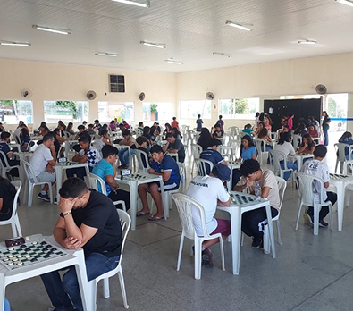

I. Etapa do Circuito Paulista

A etapa do Circuito Paulista de Damas realizada em Inúbia Paulista foi um evento marcante no calendário
do esporte, reunindo 101 atletas de diversas regiões do estado e promovendo uma verdadeira celebração do
jogo de damas. Durante o torneio, atletas experientes e novos talentos se enfrentaram em partidas
repletas de estratégia e habilidade, demonstrando toda a complexidade e beleza do jogo.
Organizado com rigor e profissionalismo, o evento contou com a presença de jogadores de 12
municípios, o
que enriqueceu a troca de experiências e fortaleceu os laços entre as diferentes comunidades. As
disputas foram intensas e emocionantes, proporcionando momentos de grande aprendizado e incentivo à
prática esportiva entre os participantes.
Além da competição em si, a etapa de Inúbia Paulista serviu como um importante catalisador para
a
promoção do esporte na região. Autoridades locais e membros da comunidade se reuniram para prestigiar o
torneio, ressaltando o papel do jogo de damas como ferramenta de integração social e cultural. O evento
também foi uma excelente oportunidade para identificar e incentivar novos talentos, contribuindo para o
desenvolvimento futuro do esporte no estado.
Em resumo, a etapa do Circuito Paulista de Damas em Inúbia Paulista destacou-se não apenas pela
qualidade técnica das partidas, mas também pelo espírito esportivo e pela valorização do jogo, deixando
um legado positivo para a comunidade e impulsionando a continuidade e a evolução da modalidade.
Agradecemos a prefeitura de Inúbia Paulista, o departamento de esportes de Inúbia Paulista, os
organizadores, apoiadores e
ao
público presente por fortalecer ainda mais o nosso esporte!